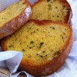
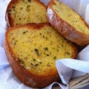
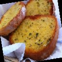
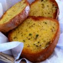
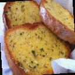
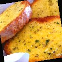
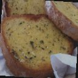
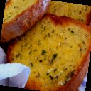
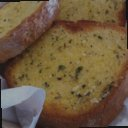
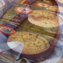

6.1 題目：others.py 的第一格
"""# Q1. Augmentation Implementation
## Implement augmentation by finishing train_tfm in the code with image size of your choice.
## Directly copy the following block and paste it on GradeScope after you finish the code
### Your train_tfm must be capable of producing 5+ different results when given an identical image multiple times.
### Your train_tfm in the report can be different from train_tfm in your training code.
"""
train_tfm = transforms.Compose([
# Resize the image into a fixed shape (height = width = 128)
transforms.Resize((128, 128)),
# You need to add some transforms here.
transforms.ToTensor(),
])這是原版 notebook 最後幾格的照抄（投影片第 37 頁是同樣的題目）。要求只有兩條：完成 train_tfm，圖片大小自選；同一張圖輸入多次，要能產生 5 種以上不同的結果（第 4 行）。第 5 行說報告裡交的可以和訓練時用的不一樣。第 9 行用了 transforms，但這個檔案從頭到尾沒有 import torchvision.transforms as transforms：它本來是 notebook 裡的一格，transforms 是前面幾格 import 的。單獨執行 others.py 會在第 9 行出錯（第 7 章 7.1 節有實測），而本 repo 也沒有任何程式 import 它。真正影響訓練的是 train.py:50-56 那一份 train_tfm，兩者內容相同。
投影片第 37 頁用一張太空人的照片說明「對」與「錯」：錯的那一排，五次輸出一模一樣；對的那一排，五次各有不同的裁切、翻轉與顏色。範例程式的 train_tfm 只有 Resize 與 ToTensor，兩者都是確定性的，所以屬於錯的那一排。本書實測：同一張 0_0.jpg 經過 test_tfm（和範例的 train_tfm 內容相同）5 次，5 個 tensor 逐位元相同。
6.2 本書的答案：增強 A
投影片第 9 頁的提示是：看 torchvision.transforms 的清單，「鼓勵多樣性」，疊好幾個轉換通常比較好。本書用的是下面這一份（第 8 章的實驗都叫它「增強 A」，定義在 docs/tools/hw03_exp.py）：
train_tfm = transforms.Compose([
transforms.RandomResizedCrop((128, 128), scale=(0.5, 1.0)),
transforms.RandomHorizontalFlip(),
transforms.RandomRotation(15),
transforms.ColorJitter(brightness=0.3, contrast=0.3, saturation=0.3),
transforms.ToTensor(),
])和範例比，第一行的 Resize((128, 128)) 換成了 RandomResizedCrop，它本身就會輸出 128×128，所以不需要另外縮放；ToTensor() 照第 2 章的提醒放在最後。中間四個都是「隨機」轉換：每次被呼叫時，從 PyTorch 的全域亂數產生器抽數字決定這一次怎麼變。下面用同一張麵包 0_0.jpg，一個一個看它們各自做了什麼（每張都是單獨套用那一個轉換、再縮成 128×128；翻轉那張為了示範，把機率設成 1）：
Resize((128, 128))
RandomResizedCrop裁一塊再放大

RandomHorizontalFlip左右翻轉

RandomRotation(15)轉一個小角度

ColorJitter亮度、對比、飽和度
RandomResizedCrop((128, 128), scale=(0.5, 1.0))：隨機選一塊面積是原圖 50%–100% 的區域、長寬比在 3/4 到 4/3 之間（預設），裁下來再縮成 128×128。模型因此看到不同大小、不同位置的食物，學會「麵包不一定在正中央、也不一定占滿整張圖」。本書用torch.manual_seed(0)讓它對 512×512 的0_0.jpg抽 5 次裁切位置，得到的（上, 左, 高, 寬）是(8, 30, 410, 478)、(22, 50, 398, 430)、(77, 18, 420, 454)、(8, 56, 403, 333)、(20, 2, 415, 366)，每次都不一樣。它同時取代了第 2 章那個會把圖壓扁的Resize：裁的區域長寬比接近 1，壓扁的程度比較小。RandomHorizontalFlip()：50% 的機率左右翻轉。食物照片左右鏡像之後仍然是同一種食物，這是最安全的增強。上下翻轉就不一定了（湯碗倒過來不太自然），所以沒有用。RandomRotation(15)：在 −15° 到 15° 之間隨機旋轉，轉出去的角落補黑色。同樣的種子下抽 5 次的角度是 −0.11°、8.05°、−12.35°、−11.04°、−5.78°。角度不大，因為拍照時手機通常是正的；黑邊是這個轉換的副作用，模型要學會忽略它。ColorJitter(brightness=0.3, contrast=0.3, saturation=0.3)：亮度、對比、飽和度各自乘上 0.7–1.3 之間的隨機倍數。不同的燈光、相機會讓同一道菜顏色不同。這裡沒有調色相（hue），因為顏色本身就是分辨食物的重要線索（第 2 章看到食物照片整體偏紅），把麵包染成藍色反而會混淆模型。
選哪些轉換、強度多少，沒有標準答案。原則是：轉換後的圖，人看了仍然會說是同一類。太弱等於沒做，太強會讓訓練資料和測試資料的樣子差太多。投影片第 6 頁提到助教試過「Augmentation A」與「Augmentation B」兩種，Medium 基準線分別要 6 小時與 80 分鐘，但沒有說它們的內容；本書的「增強 A」只是借用名字，和助教的不是同一份。
6.3 驗證「5 種以上不同的結果」
把四個轉換組合起來，對同一張圖連續呼叫 5 次（先 torch.manual_seed(0)，讓這一段可以重現）：





肉眼就看得出五張都不同。用程式確認：把 5 個輸出 tensor 兩兩用 torch.equal 比較，只有對角線（自己和自己）相等，5 個彼此全部不同。這就滿足了 Q1 的要求。實際上，四個連續分布的隨機參數組合起來，兩次結果完全相同的機率幾乎是 0，所以不只 5 種，而是每一次都不同。
增強也會消耗亂數
每一個隨機轉換都從 PyTorch 的全域亂數產生器抽數字（num_workers=0 時就在主程式裡）。第 4 章 4.6 節看到，亂數的消耗方式一改，後面的打亂順序就全部錯開。所以加了增強之後，不只每張圖長得不一樣，連每個 epoch 的 batch 組成也和沒加時不同；第 8 章比較「有、無增強」時，差異同時包含了這兩件事。這不影響結論，但要知道它不是只改了一個變數。
6.4 有沒有用：同樣 40 個 epoch 的比較
為什麼增強只用在訓練？因為它的目的是讓訓練資料變多樣，不是改變評估標準：驗證與測試要量的是模型在「正常的圖」上的表現，所以 test_tfm 保持確定性（第 2 章 2.1 節的註解就是這個意思）。增強的效果，要看它能不能延緩過擬合。下表取自第 8 章的兩組實驗：其他設定都和 train.py 相同，只差 train_tfm，各跑 40 個 epoch（驗證欄是整個驗證集一次算的真實值）：
| epoch | 沒有增強（base40） | 增強 A（augA40） | ||||
|---|---|---|---|---|---|---|
| 訓練 acc | 驗證 acc | 驗證 loss | 訓練 acc | 驗證 acc | 驗證 loss | |
| 5 | 0.62643 | 0.55394 | 1.32449 | 0.49833 | 0.50292 | 1.42699 |
| 10 | 0.83457 | 0.51545 | 1.82987 | 0.59332 | 0.56589 | 1.34020 |
| 20 | 0.99990 | 0.65335 | 1.71685 | 0.71823 | 0.60729 | 1.19178 |
| 30 | 1.00000 | 0.67405 | 1.78995 | 0.77397 | 0.63907 | 1.18154 |
| 40 | 1.00000 | 0.67259 | 1.90464 | 0.83460 | 0.67405 | 1.10745 |
沒有增強時，第 20 個 epoch 訓練準確率就到了 0.9999：9,866 張圖被背起來了。驗證 loss 在第 6 個 epoch 達到最低的 1.2509 之後就一路上升到 1.90，驗證準確率則停在 0.67 左右；第 27 個 epoch 是最好的一次（印出 0.67781，真實 0.67347）。加了增強之後，模型每個 epoch 看到的都是「新的」圖，訓練準確率爬得慢（第 40 個 epoch 才 0.83），驗證 loss 卻一路下降到第 35 個 epoch 的 0.99139；最好的一次是第 35 個 epoch（印出 0.69050，真實 0.68805）。
兩個觀察：第一，40 個 epoch 內，增強 A 的最佳驗證準確率只比沒有增強高 1.5 個百分點，差得不多；但它的驗證 loss 還在下降、訓練準確率還沒碰頂，代表還沒訓練完。投影片說 Medium 要「增強 + 訓練更久」，第 8 章的 200 個 epoch 長跑就是在驗證這件事。第二，增強的成本不高：每個 epoch 的訓練時間平均從 27.4 秒變成 30.1 秒，多出來的是 CPU 上做轉換的時間（第 2 章看到讀圖本來就是瓶頸）。
6.5 進階一：mixup
投影片第 10–11 頁介紹 mixup：把兩張圖按比例疊在一起，標籤也按同樣的比例混合。例如 0.5 × 麵包 + 0.5 × 湯：

標籤：第 0、9 類各 0.5
右邊那張是本書把兩個 (3, 128, 128) 的 tensor 各乘 0.5 相加得到的。它的標籤不再是一個整數，而是一個長度 11 的機率向量：第 0 個和第 9 個是 0.5，其他是 0。一般的寫法是每個 batch 抽一個比例 λ（通常從 Beta 分布抽），把 batch 和「打亂順序的自己」混合：x = λ·x₁ + (1−λ)·x₂、y = λ·y₁ + (1−λ)·y₂。它讓模型在兩類之間學到比較平滑的決策邊界，不會對每張訓練圖都給出 100% 的信心。
投影片第 11 頁說，要自己寫 cross entropy 的公式，「因為 CrossEntropyLoss 不支援多個標籤」。這句話在 2026 年已經不成立：PyTorch 1.10（2021 年 10 月）起，nn.CrossEntropyLoss 的目標可以是「每一類的機率」，形狀和 logits 相同。本書實測：對一組隨機的 logits，用上面那種 0.5／0.5 的機率標籤，nn.CrossEntropyLoss() 算出 2.9584498405456543，自己寫的 -(y * log_softmax(z)).sum(1).mean() 也是 2.9584498405456543，完全相同；機率標籤是 one-hot（某一類 1.0）時，結果和直接給整數標籤相同。所以今天實作 mixup，loss 這一步一行都不用改。
本書的第 8 章沒有訓練 mixup 的版本，它的效果留作第 8 章題庫裡的挑戰題。
6.6 進階二：test time augmentation（TTA）
train.py:48-49 的註解提到：「也可以在測試時用增強，用 train_tfm 產生多種變化，再用 ensemble 的方法測試」。這就是投影片第 12–13 頁的 TTA：一張測試圖，用 train_tfm 隨機變出幾個版本，再加上一個用 test_tfm 的原版，各自預測、把結果平均起來。投影片建議原版的權重大一點，例如：
train_tfm 版本的平均預測） + 0.5 × （test_tfm 版本的預測）原理是：單一次預測可能剛好被某個角度、某個裁切誤導，多看幾個版本取平均，比較不受單一視角的影響。代價是預測時間變成好幾倍。要平均的是 logits 或 softmax 後的機率（投影片第 16 頁：平均比投票「更不模糊」），而不是平均 argmax 之後的類別。實作需要改 test.py：測試集要能用不同的 transform 讀好幾次，預測迴圈要收集 logits 而不是直接取 argmax。第 8 章會用存好的 checkpoint 實際跑 TTA，看它在驗證集上能加幾分。
現在的做法：自動增強策略
手動挑轉換與強度很花時間，今天常用的是已經在大型資料集上調好的策略：transforms.TrivialAugmentWide() 每張圖隨機挑一種操作、隨機強度，幾乎不用調參；RandAugment 只有「做幾個操作」與「強度」兩個參數；AutoAugment 則是用搜尋找出的固定策略。torchvision 的 transforms.v2 也直接提供 MixUp 與 CutMix（把一張圖的一塊剪下貼到另一張圖上），以 batch 為單位套用。訓練 ImageNet 等級的模型時，RandomResizedCrop + 翻轉 + 一種自動增強 + MixUp／CutMix 幾乎是標準配備。
本章重點
- Q1 的模板在
others.py:1-14（沒有 importtransforms，不能單獨執行）；真正影響訓練的是train.py:50-56。範例的train_tfm是確定性的，同一張圖 5 次輸出逐位元相同。 - 本書的增強 A：
RandomResizedCrop((128, 128), scale=(0.5, 1.0))、RandomHorizontalFlip()、RandomRotation(15)、ColorJitter(0.3, 0.3, 0.3)、ToTensor()。同一張圖 5 次輸出兩兩不同，滿足「5 種以上」。 - 原則：轉換後的圖，人看了仍會說是同一類。翻轉安全、旋轉角度小、不調色相。增強會消耗亂數，連帶改變 batch 的組成。
- 40 個 epoch：沒有增強時第 20 個 epoch 就把訓練集背起來（0.9999），驗證 loss 從第 6 個 epoch 起上升；增強 A 的驗證 loss 降到 0.991、最佳驗證準確率 0.68805（沒有增強 0.67347），而且還沒訓練完。每個 epoch 多花約 2.7 秒。
- mixup：兩張圖與兩個標籤按比例混合。PyTorch 1.10 起
CrossEntropyLoss直接接受機率標籤（實測與手寫公式相同），投影片「要自己寫公式」的說法已過時。 - TTA：測試時對同一張圖做幾種增強，平均 logits 或機率；第 8 章實測。
自我測驗
1. 只把 train_tfm 改成 Compose([Resize((128, 128)), RandomHorizontalFlip(), ToTensor()])，能滿足 Q1「5 種以上不同的結果」嗎？
不能。水平翻轉只有「翻」與「不翻」兩種結果，同一張圖輸入再多次也只有 2 種不同的輸出。要滿足要求，至少要有一個參數是連續的或選項夠多的轉換，例如隨機裁切、旋轉或顏色調整。
2. 為什麼不把 test_tfm 也換成增強 A？那樣驗證準確率會變高還是變低？
驗證集要回答的是「模型在正常的圖上表現如何」，加了隨機轉換之後，每次驗證看到的圖都不同，印出的數字會隨機晃動，也無法和測試時的條件對應。至於高低：增強過的圖通常比原圖難認（有裁切、黑邊、顏色變化），單次預測的準確率多半會變低；只有像 TTA 那樣「多個版本平均」才可能變高。（單次增強評估的數字本書沒有實際量；TTA 的數字在第 8 章。）
3. 沒有增強時，第 30 個 epoch 的訓練準確率 1.00000、驗證準確率 0.67405、驗證 loss 1.78995。為什麼準確率沒怎麼掉，loss 卻比第 6 個 epoch 的最低點 1.2509 高了這麼多？
準確率只看「分數最高的那一類對不對」，loss 還看「對正確答案有多少信心」。背熟訓練集之後，模型對每張圖都給出極端的信心；在驗證集上，猜對的圖信心很高（loss 很小），猜錯的圖對錯誤答案也信心很高、對正確答案的機率接近 0，loss 就非常大。少數猜錯但很自信的圖，就足以把平均 loss 拉高，而答對的比例幾乎不變。
4. 用 torch.manual_seed(0) 之後連續呼叫增強 A 5 次，和不設種子直接呼叫，哪一種的 5 個結果比較「不同」？
一樣不同。設種子只決定「從哪裡開始抽」，抽出來的序列仍然是隨機的，5 次呼叫之間照樣各自不同。設種子的作用是讓重跑這段程式時得到同樣的 5 張圖（本章的示範圖因此可以重現），而不是讓 5 次呼叫彼此相同。
5. 用 mixup 時，一個 batch 的訓練準確率該怎麼算？直接用 train.py:124 的寫法會有什麼問題？
第 124 行是 torch.eq(logits.argmax(dim=-1), labels)，labels 是整數。mixup 之後標籤是機率向量，形狀 (B, 11)，直接比較的形狀對不上（或者要先對標籤取 argmax）。而且一張「0.5 麵包 + 0.5 湯」的圖，猜麵包或湯都算對一半，「準確率」本身就不太有意義。常見的做法是訓練時只看 loss，準確率留給沒有混合的驗證集。（這題是推論，本書沒有實作 mixup。）
延伸閱讀
- torchvision — Transforming and augmenting images：所有轉換的清單，以及
transforms.v2的 MixUp／CutMix。 - Zhang et al. (2017) — mixup: Beyond Empirical Risk Minimization：mixup 的原始論文。
- Müller & Hutter (2021) — TrivialAugment：「每張圖隨機一種操作」為什麼就夠好。
- Cubuk et al. (2019) — RandAugment：只有兩個參數的自動增強。
- PyTorch — CrossEntropyLoss：「Target: class indices or class probabilities」的說明。